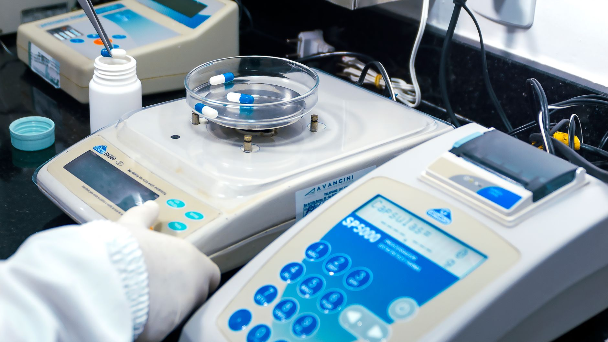

Inicio/Artículos/Suplementos · Longevidad
NAD+ y NMN: qué dice realmente la ciencia sobre los suplementos anti-edad de moda
9 min de lectura · Actualizado 29 de agosto de 2026 · Por Miguel Lopez

Introducción
Frascos de NMN, NR y NAD+ se han convertido en habituales de las estanterías de suplementos "longevidad", prometidos como la forma de recuperar energía celular y frenar el envejecimiento. Es una de las categorías de suplementos que más ha crecido en los últimos años. ¿Hay ciencia sólida detrás, o es la última moda del "biohacking" con un precio elevado?
Qué son el NAD+, el NMN y el NR
El NAD+ (nicotinamida adenina dinucleótido) es una molécula presente en todas las células del cuerpo, esencial para producir energía y para procesos de reparación celular. Los niveles de NAD+ disminuyen de forma natural con la edad. Como el NAD+ en sí se absorbe mal por vía oral, los suplementos venden en su lugar "precursores": el NMN (mononucleótido de nicotinamida) y el NR (ribósido de nicotinamida), moléculas que el cuerpo puede convertir en NAD+ una vez absorbidas.
Qué muestran los estudios en animales
Buena parte del entusiasmo inicial viene de estudios en ratones, donde aumentar los niveles de NAD+ con estos precursores mostró mejoras en marcadores metabólicos, función muscular y algunos parámetros asociados al envejecimiento. Los resultados en animales de laboratorio no se traducen automáticamente en los mismos efectos en personas, y esa es justo la fase en la que está ahora esta investigación: pasar de ratones a ensayos clínicos en humanos.
Qué muestran los ensayos en humanos sobre seguridad
Aquí es donde hay más certeza, aunque limitada al corto plazo. Varios ensayos clínicos aleatorizados en adultos sanos han evaluado la suplementación con NMN durante periodos de semanas a pocos meses, y en general no se han detectado efectos adversos graves ni alteraciones relevantes en analíticas de seguridad (función hepática, renal) en esos ensayos. Una revisión publicada en la revista Advances in Nutrition sobre ensayos clínicos con NMN concluye que "hasta la fecha, el perfil de seguridad a corto plazo parece favorable", aunque los propios autores señalan que faltan estudios más largos y con más participantes para confirmarlo con solidez.
Qué muestran los ensayos en humanos sobre eficacia
Sobre si "funciona" para frenar el envejecimiento, la respuesta honesta es que no lo sabemos todavía. Los ensayos en humanos son en su mayoría pequeños, de corta duración, y se han centrado en medir marcadores intermedios (los propios niveles de NAD+ en sangre, algunos indicadores metabólicos o de resistencia física), no en resultados como vivir más años o con menos enfermedad, que solo se pueden confirmar con estudios de muchos años de seguimiento. Aumentar el NAD+ en sangre no es lo mismo que demostrar que eso frena el envejecimiento o previene enfermedades en humanos.
En resumen: los ensayos en humanos sugieren que el NMN es razonablemente seguro a corto plazo según lo estudiado hasta ahora, pero no existe todavía evidencia sólida de que frene el envejecimiento o prevenga enfermedades en personas. Ningún organismo regulador ha aprobado el NAD+, el NMN o el NR como tratamiento para el envejecimiento.
Precio y forma en la que se vende
El NAD+, el NMN y el NR se venden como suplementos dietéticos, no como medicamentos, lo que significa que no pasan por el mismo proceso de aprobación que un fármaco antes de salir a la venta. Suelen ser suplementos caros en comparación con otros de la misma categoría, y su calidad y pureza pueden variar bastante entre marcas, ya que el mercado de suplementos tiene una supervisión de calidad más laxa que la de los medicamentos.
Conclusión
Los suplementos de NAD+ y sus precursores (NMN, NR) parecen razonablemente seguros a corto plazo según los ensayos clínicos disponibles, pero la promesa de "frenar el envejecimiento" va, por ahora, muy por delante de la evidencia real en humanos. Antes de gastar en un suplemento caro con resultados todavía inciertos, hábitos con décadas de respaldo científico (dormir bien, hacer ejercicio de fuerza y cardiovascular, mantener una alimentación equilibrada y no fumar) siguen siendo la intervención con más evidencia para envejecer con salud.
- ¿Qué diferencia hay entre NAD+, NMN y NR?
- El NAD+ es la molécula final que usan las células para producir energía, pero se absorbe mal si se toma directamente por vía oral. El NMN y el NR son "precursores" que el cuerpo puede convertir en NAD+ una vez absorbidos, y son la forma en que suelen venderse los suplementos.
- ¿Son seguros los suplementos de NMN?
- Los ensayos clínicos en adultos sanos, durante semanas o pocos meses, no han encontrado efectos adversos graves ni alteraciones relevantes en analíticas de seguridad, aunque faltan estudios más largos para confirmarlo con solidez.
- ¿El NMN frena realmente el envejecimiento en humanos?
- No hay evidencia sólida de eso todavía. Los ensayos en humanos son en su mayoría pequeños y miden marcadores intermedios, como los niveles de NAD+ en sangre, no resultados como vivir más años o con menos enfermedad.
- ¿Está aprobado el NMN como medicamento?
- No. El NAD+, el NMN y el NR se venden como suplementos dietéticos, no como medicamentos, y ningún organismo regulador los ha aprobado como tratamiento para el envejecimiento.
- ¿Por qué bajan los niveles de NAD+ con la edad?
- Es un proceso natural asociado al envejecimiento celular; los niveles de NAD+ disminuyen de forma progresiva con los años, lo que ha motivado el interés científico en si restaurarlos artificialmente aporta algún beneficio.
- ¿Cuánto cuestan estos suplementos?
- Suelen ser más caros que otros suplementos habituales, y su calidad y pureza pueden variar bastante entre marcas, ya que el mercado de suplementos tiene menos supervisión de calidad que el de los medicamentos.
- ¿Qué muestran los estudios en animales?
- En ratones, aumentar el NAD+ con estos precursores mostró mejoras en marcadores metabólicos y función muscular, pero los resultados en animales de laboratorio no se traducen automáticamente en los mismos efectos en personas.
- ¿Qué es más efectivo para envejecer con salud, según la evidencia actual?
- Hábitos con décadas de respaldo científico (dormir bien, hacer ejercicio de fuerza y cardiovascular, mantener una alimentación equilibrada y no fumar) siguen siendo la intervención con más evidencia, por delante de estos suplementos todavía en estudio.
Preguntas frecuentes
Fuentes
Enlaces a la fuente original, para que puedas comprobarlo por tu cuenta.
Miguel Lopez
Periodista independiente, no profesional sanitario. Escribe sobre tendencias de salud y fitness citando siempre las fuentes primarias, para que puedas comprobarlo por tu cuenta. Más sobre el sitio.